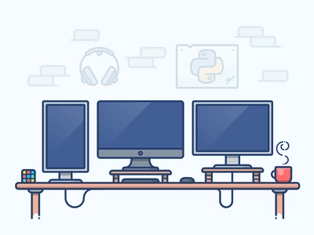
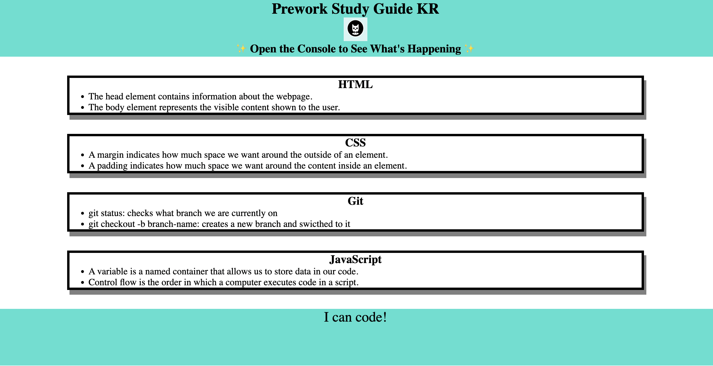
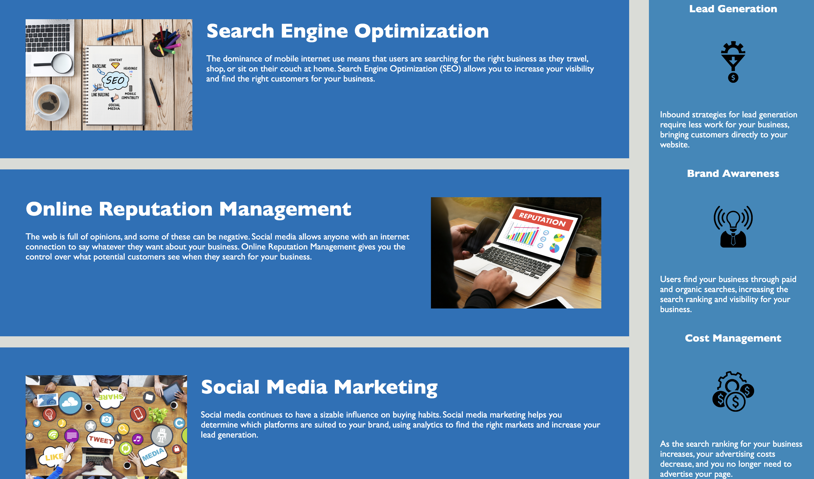

Hello, my name is Kanhai Raval.
I am a aspiring software developer, who is looking to learn and educate himself to becocme a full stack developer.
my goal is to create web & mobile application with equitable design, that solves issues and saves time for people in today's fast paced world.
My mission of 180 days of code is to become efficient and self-sufficient.
Outside of coding I enjoy analyzing financial markets, playing videos (PS5) and watching football. #GoManUtd


This was the first webpage I ever created right after I enrolled in the Uoft coding bootcamp.
It is not the most sophisticated looking, but it is the first and I created while just following
written instructions with no prior coding experience.
This was the first challenge for the bootcamp. It was a code refatcor where I had to try and
make the code more readable and add accesibility to all the images on the page.
It was a good exercise in trying to understand the code written by someone else.


In order to understad grid & flex a little better and get a little more pratice with
CSS styling and using all the differe HTML elements i decided to create a YouTube clone.
It is still under progress and hence it's not deployed it. When you click on the link it will take you
to the github repo that contains all the codes of this project.